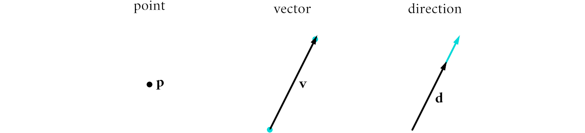
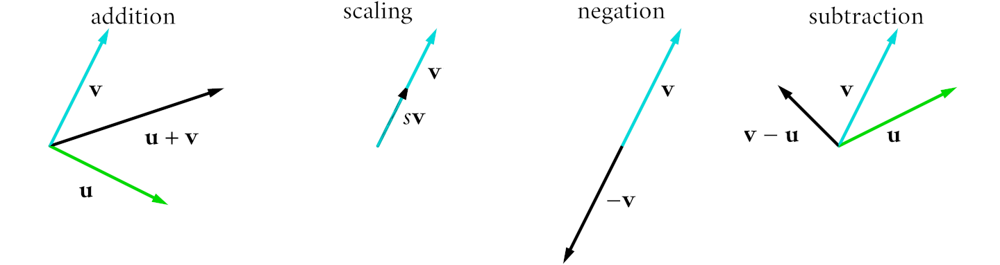
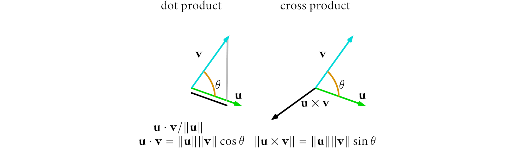
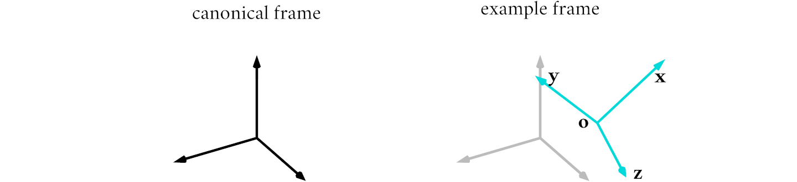
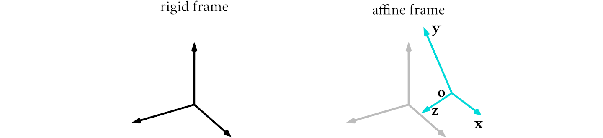
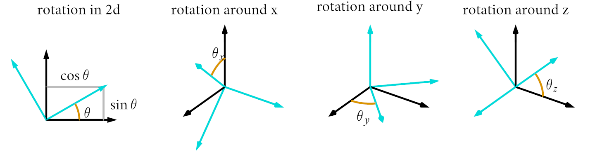
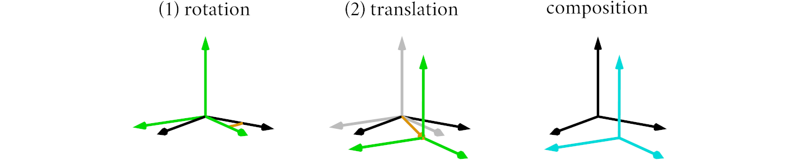
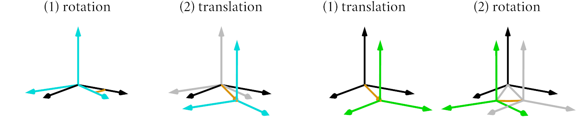
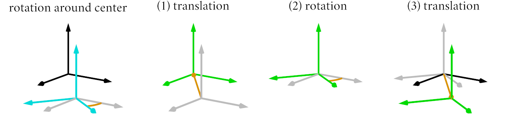
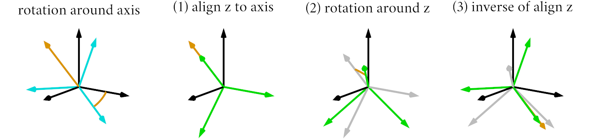

2. Points, Vectors, and Frames
Throughout this book, we will use a set of mathematical notions to represent the shapes of objects and the transformations that we apply to them. These notions are points, vectors and coordinate frames, that we use for both their geometric and algebraic meaning. We expect the reader to be familiar with these concepts, that we review in this chapter for completeness.
2.1. Points, Vectors and Directions
The basic entities that we will use to represent geometric quantities in graphics are points, vectors and directions. Points are locations in space. Vectors are directions with an associated magnitude, and can be thought of as offsets from a point to another. Directions are vectors of unit length, that indicate the relative orientation between pairs of points. Figure 2.1 shows the difference between these quantities.

Figure 2.1. Points, vectors and directions.
We will write points, vectors and directions with bold letters, using the same notation for all of them. This is a common practice in graphics, and it is helpful since it allows us to use the same operations on all of them. We will distinguish between the different geometric meanings by the context in which they are used.
To keep the description simpler, let us consider the case of vectors. We represent vectors as tuples of numbers, whose components are the vector coordinates. We adopt a notation common to linear algebra, and write the vector coordinates as a matrix with a single column. For a three-dimensional vector \(\mathbf{v}\), we write its coordinates as
Wherever possible, it is helpful to be generic on the number of dimensions. For example, in graphics we often need to describe shapes in two and three dimensions. For this reason, it is preferable to use a notation that does not explicitly specify the number of dimensions, whether possible. For example, a \(n\)-dimensional vector \(\mathbf{v}\) can be written as
2.2. Vector Operations
We manipulate vectors with operations from linear algebra, namely vector addition and scalar multiplication. In terms of vector coordinates, these operations are just component-wise application of the operator to the operands' coordinates. The sum \(\mathbf{u} + \mathbf{v}\) of two vectors \(\mathbf{u}\) and \(\mathbf{v}\) is a vector whose coordinates are the sum of the coordinates of the operands, while the product \(s \mathbf{v}\) of a vector \(\mathbf{v}\) and a scalar \(s\) is a vector whose coordinates are the products of the vector coordinates times the scalar. For convenience, we also define vector negation \(- \mathbf{v}\) as the result of scaling a vector \(\mathbf{v}\) with negative one, and vector subtraction \(\mathbf{u} - \mathbf{v}\) as the result of adding a vector \(\mathbf{u}\) to the negation of the vector \(\mathbf{v}\). In summary, we can write vector operations as
The geometric meaning of vector operations is illustrated in Figure 2.2. We recall that a vector can be thought of as the offset from a point to another. The sum of two vectors is the offset resulting from applying the two vectors' offsets in sequence, and can be visualized as the diagonal of the parallelogram defined by the two vectors. The product of a vector and a scalar is an offset that has the same or opposite direction as the operand, depending on the scalar sign, but whose length is scaled by the scalar. The negation of a vector results in an offset that has the opposite direction as the operand, but with the same magnitude. The subtraction of two vectors is the offset resulting from applying the second operand's offset and then the negation of the first operand's offset.

Figure 2.2. Vector operations.
This is the first time we encounter a duality between the algebraic and geometric meaning of a quantity. This duality is very common in graphics, and it is helpful to be able to switch between the two meanings as both are useful in practice.
More generally, it is also helpful to think about vectors operation as just component-wise operations on tuples. This allows us to write many per-component operations succinctly by applying a single-component operation to the whole vector. This notion is common not only in graphics but also in machine learning and signal processing, and employed in software libraries were it is often called broadcasting. We will use this notation extensively in this book, when applying an operator or function to vectors. For example, per-component multiplication \(\mathbf{u}\mathbf{v}\) and divisions \(\mathbf{u}/\mathbf{v}\), used to manipulate colors, can be written as
2.3. Vector Products
Two products are defined between vectors. The dot product \(\mathbf{u} \cdot \mathbf{v}\) of two vectors \(\mathbf{u}\) and \(\mathbf{v}\) is a scalar equal to the product of the vector lengths and the cosine of the angle between them. From this definition, we can see that two vectors are orthogonal if and only if their dot product is zero. The dot product is defined in any dimension and can be computed as the sum of the vectors' coordinates products as
The cross product \(\mathbf{u} \times \mathbf{v}\) of two vectors \(\mathbf{u}\) and \(\mathbf{v}\) is a vector orthogonal to both the operands and whose length is the product of the operands' lengths scaled by the sine of the angle between them. For the purpose of this book, we will only use the cross product in three dimensions, where it can be computed as
The geometric interpretation of the dot and cross product is shown in Figure 2.3. The dot product is related to the projection \(u_v\) of a vector \(\mathbf{u}\) onto another vector \(\mathbf{v}\), that is a scalar equal to the product of the vector length and the cosine of the angle between them. From this definition, we can see that the projection of a vector onto another can be computed by dividing the dot product of the two vectors by the length of the second vector as
The cross product of two vectors is a vector orthogonal to both the operands. The area \(A\) of the parallelogram defined by two vectors \(\mathbf{u}\) and \(\mathbf{v}\) is equal to the length of the cross product of the two vectors.

Figure 2.3. Vector products.
In the previous definitions, we have used the norm of a vector \(\mathbf{v}\), that we indicated as \(\|\mathbf{v}\|\). The geometric interpretation of the norm is the length of the vector's offset. This definition holds for any number of dimensions. In terms of the vector coordinates, the norm can be computed as the square root of the sum of the coordinates squared, or equivalently as the square root of the dot product of the vector with itself, written as
A related operation is vector normalization that takes a vector \(\mathbf{v}\) as input and returns a vector \(\hat{\mathbf{v}}\) of unit length that points in the same directions. Vectors are normalized by scaling their components by the vector's length. This operation is often used to obtain directions from vectors or differences of points. We can write the normalization of a vector as
2.4. Coordinate Frames
The coordinates of points and vectors are values that are specified with respect to a coordinate system, also called a coordinate frame. Figure 2.4 shows example coordinate systems in two and three dimensions. A coordinate system is defined by a set of orthogonal axes of unit lengths, that specify the orientation of the coordinate system, and an origin that specifies its position. For example, in three dimensions, we define a coordinate frame \(\mathbf{F}\) with three vectors, often named \(\mathbf{x}\), \(\mathbf{y}\) and \(\mathbf{z}\), and an origin, often named \(\mathbf{o}\). In this book, we write coordinate systems as matrices whose columns are the axes of the coordinate system and whose last column is the origin, written as
As before, it is preferable to write the definition of a coordinate system in a manner that is generic with the number of dimensions. An \(n\) dimensional coordinate system is defined by \(n\) axes and an origin. We can write this coordinate system as an \(n \times (n+1)\) matrix whose first \(n\) columns are the axes \(\mathbf{e}_i\) and the last column is the origin \(\mathbf{o}\) as
In this notation, we can state succinctly that axes are orthogonal and of unit length by computing the dot product of the axes as

Figure 2.4. Example of an arbitrary coordinate frame expressed with respect to the canonical coordinate frame.
The coordinates of geometric quantities are specified with respect to a coordinate system's axes and origin. But this consideration raises the question of how to specify the coordinates of the axes and origin themselves. The answer is that we need to specify these coordinates with respect to another coordinate system, which seems a recursive definition with no end. In practice, we choose by convention a default coordinate system that function as a reference if no other frame is specified. This coordinate system is sometimes called the canonical or standard coordinate system, but in graphics the most common term is world coordinate system.
When computing geometric operations, the coordinates of all quantities have to be written with respect to the same coordinate system. If we did not use the same frame for all quantities, we would mix coordinates values that are written with respect to different references, leading to incorrect results.
2.5. Coordinate Transformations
We often need to transform the coordinates of a point or vector from a coordinate system to another, for example to perform computations between quantities specified with respect to different frames. Figure 2.5 shows these transformations. For simplicity, we will consider the case of transforming between local coordinates, written with respect to a frame, and world coordinates, written with respect to the canonical frame. In the following equations, we write the point in local coordinates as \(\mathbf{p}^l\) and in world space as \(\mathbf{p}\), to distinguish between.
The local coordinates of a point with respect to a frame are the projections of the vector between the frame origin and the point onto the frame axes. Since the axes of the frame are orthogonal, the local coordinates can be computed independently, and since the axes are of unit length, the local coordinates are just the dot products of the vector between the frame origin and the point with the frame axes. We write the transformation from world to local coordinates as \(\mathbf{F}^{-1} \cdot \mathbf{p}\), and compute it as
From the local coordinates, we can get the position of the point in world coordinates by summing the origin of the frame and the scaled axes of the frame. We write the transformation from world to local coordinates as \(\mathbf{F} \cdot \mathbf{p}^l\), and compute it as
Figure 2.5. Coordinates of a point with respect to a frame.
We transform vectors with the same formulae, but without subtracting the origin. Geometrically, this happens because vectors are not anchored to a particular location but only specify a direction, so we disregard the frame origin. Algebraically, since vectors are difference between points, the subtraction of the origin gets canceled out in the above formulae. Following a notation similar to the one used for points, we can write
So far we have not discussed the change in coordinates for directions. This is because changing coordinate frames does not change vector lengths, so there is no need to distinguish between vectors and directions so far.
Before ending this section, we should address an aspect that many, myself included, find confusing when learning frames the first time. A change of coordinate systems does not transform the geometric location of points, but changes the numerical values of the coordinates. Let us consider a point \(\mathbf{p}\) and write its coordinates with respect to two different frames \(\mathbf{F}_1\) and \(\mathbf{F}_2\). In these two cases, the coordinate values are different, since they are written with respect to different references. However, the point itself is the same, and its coordinates with respect to the world frame are the same, a relation that is shown in Figure 2.6 and that can be written as
Figure 2.6. Coordinates of a point written with respect to two different frames.
Given that changes to coordinate systems do not change geometric properties, you may be wondering why we need to use them at all. The main reason is that in many cases geometric computations are simpler to write when performed in an appropriate coordinate system. We will see examples of this in the following chapters.
2.6. Affine Transformations
The most common transformations that we perform in graphics are the one that change the position of points and the orientation and lengths of vectors. For example, in an animation we may want to move an object from one location to another, or rotate it to change its orientation.
Many useful transformations can be expressed by constructing an appropriate frame and transforming points and vectors with respect to it. Frames with orthonormal axes are called rigid frames, since they do not change the shape of objects. They can represent rotations, translations and combinations of the two. Coordinate systems are an example of rigid frames.
A generalization of rigid frames, called affine frames, relaxes this limitation by allowing the axes of the coordinate system to have any length and be non-orthogonal. Figure 2.7 shows an example of affine frames. Affine frames can also represent scaling, shearing and mirroring operations.

Figure 2.7. Example of an affine frame compared to a rigid frame.
Just like before, we can write affine frames as matrices whose columns are the axes of the frame and whose last column is the origin. To avoid confusion with coordinate systems, we will use the notation \(\mathbf{A}\) to indicate an \(n \times (n+1)\) affine frame, and write its axes and origin as the \(n\)-dimensional vectors \(\mathbf{m}_i\) and \(\mathbf{t}\) respectively. As a convenience, we can define the \(n \times n\) matrix \(\mathbf{M}\), whose columns are the frame axes \(\mathbf{m}_i\), and write an affine frame as
We will apply the transformations directly in world coordinates, since in this case we are changing the position of points and the orientation of vectors directly. The transformation of points and vectors by the frame are written as before. But their inverses cannot be computed in the same manner, since the axes of the frame are not orthogonal, so we cannot compute projections independently. For now, let us ignore the inverse transformations and focus on the forward ones, that can be written as
To manipulate affine frames, it is helpful to take a more algebraic approach. Let us consider an \(n \times n\) matrix \(\mathbf{M}\), written in terms of its columns \(\mathbf{m}_i\). The product \(\mathbf{M} \mathbf{v}\) of the matrix \(\mathbf{M}\) and a vector \(\mathbf{v}\) can be computed as the sum of the matrix columns weighted by the vector coordinates, written as
Notice how the above equation is the same as the one for the transformation of vectors by an affine frame, provided that we identify the matrix columns with the frame axes. The point transformations are also similar, except for the addition of the translation. This means that we can express the transformation of points and vectors by an affine frame as a matrix-vector product, and a translation as needed, written as
This is a very useful observation, since it allows us to write affine transformations as matrix-vector products, that are easier to manipulate and compose than the original formulae. In fact, this notation makes it clear that affine transformation are comprised of two component, a linear component, represented by the matrix \(\mathbf{M}\), and a translation, represented by the vector \(\mathbf{t}\). This is the algebraic meaning of affine transformations. The geometric interpretation of affine transformations is just to consider them as frames whose axes are not orthogonal and whose origin is not at the origin of the world frame. In this book, we will use extensively both interpretations.
From the above equations, we can compute the inverse ones with simple algebraic manipulations, and write them as
where \(\mathbf{M}^{-1}\) is the inverse of \(\mathbf{M}\). The inverse of a matrix \(\mathbf{M}^{-1}\) is the matrix that multiplied by the input one \(\mathbf{M}\) gives the identity matrix \(\mathbf{I}\), that is the matrix with ones on the diagonal and zeros elsewhere. From the equation above, we the inverse transformations are written in the same form as the forward ones, if we define the inverse affine frame \(\mathbf{A}^{-1}\) as
For general transformations, we can compute the matrix inverse \(\mathbf{M}^{-1}\) using linear algebra tools. In fact, since in graphics we are mostly interested in two- and three-dimensional transformations, the corresponding matrix inverses can be computed analytically, and found in many graphics libraries.
A special case is the inverse of a rigid frame, where the axes' matrix is orthonormal, i.e. a matrix whose columns are orthonormal vectors. From linear algebra, we know that the inverse of an orthonormal matrix is just its transpose. This means that the inverse of a matrix whose columns are the axes of a rigid frame is just the matrix whose rows are those axes. The product of this inverse matrix by a vector is equivalent to the transformation from world to local coordinates for vectors. In this case, we can write the inverse transformation as
Transformations are useful when applying changes to objects but also to represent large environments. Consider the case of an object that we want to display many times in the same environment. For examples, the chairs and tables of conference rooms. One possibility is to duplicate the object data and update the object vertices to move each copy to different locations. The other possibility is to store the object data once in local coordinates, and place multiple copies by specifying frames for each location. This relatively simple idea is key to scaling up the complexity of graphics environments, and is employed in all professional graphics software.
When it comes to which frames to use, whether affine or rigid, there is no clear answer, and it depends on the application. Affine frames are more general since they can represent more transformations, and are the most suitable for modeling application. Rigid frames do not change the shape of objects, and as a consequence they maintain physical quantities such as object mass or light intensity. For this reason, applications such as realistic rendering and simulation prefer to use only rigid transformations. Rigid frames are also cheaper to compute with since they do not require matrix inversion to compute inverse transformations.
2.7. Frames From Transformations
In many applications, it is helpful to construct frames that result in desired transformations when applied. In this section, we will list the most common transformations used in graphics and show how to construct the corresponding frames, and their inverse frames that can be often computed analytically.
The simplest transformations are translations, that results in objects moved to different locations. Translations apply an offset vector \(\mathbf{t}\) to all points \(\mathbf{p}\) to obtain the transformed points \(\mathbf{p} + \mathbf{t}\). This corresponds to an affine transformation where the linear component leaves the points unchanged, and the translation component is the offset vector. The corresponding affine frame, shown in Figure 2.8, has a linear component that is the identity matrix, and a translation component that is the offset vector, written as
Figure 2.8. Frame corresponding to a translation.
The simplest change of an object shape is to alter its size by scaling it around the origin, going from \(\mathbf{p}\) to \([s_1 p_1, ..., s_n p_n]\), where \(\mathbf{s}\) are the scaling factors. We distinguish between uniform scaling, where the same scaling factor is applied to all coordinates, and non-uniform scaling, where different scaling factors are applied to each coordinate, thus changing the objects proportions. The corresponding affine frames, shown in Figure 2.9, have no translation component, and a linear component that is a diagonal matrix with the scaling factors on the diagonal, written as
Figure 2.9. Frames corresponding to uniform and non-uniform scaling.
Rotations are more complex and we need to distinguish the case of two-dimensional and three-dimensional rotations. Let us begin with the case of two-dimensional rotations. In this case, we want to rotate a point \(\mathbf{p}\) around the origin by an angle \(\theta\). The rotated point is best computed by first rotating the axes of the frame by the same angle, and then computing the coordinates of the point with respect to the rotated frame. The rotated \(\mathbf{x}\) axis is a vector that forms an angle \(\theta\) with the \(\mathbf{x}\) axis. Its coordinates are just the cosine and sine of the rotation angle. Similarly, the rotated \(\mathbf{y}\) axis is a vector that forms an angle \(\theta + \frac{\pi}{2}\) with the \(\mathbf{x}\) axis. Its coordinates are just the negated sine and cosine of the rotation angle. The rotated point is then computed as the sum of the rotated axes scaled by the point components as
The corresponding rotation frame, shown in Figure 2.10, is constructed by defining a rotation matrix whose columns are the rotated axes, and by setting the translation component to zero, as
Rotations in three dimensions depend on the axis of rotation. For now, let us consider the case of rotations around the world axes, and start with the rotation around the \(\mathbf{z}\) axis. In this case, we observe that the \(z\) coordinate of the rotated remains unchanged, while the \(x\) and \(y\) coordinates are rotated in the \(xy\) plane just like in the two-dimensional case. We can then derive the rotation frame in the same manner as before, and write it as

Figure 2.10. Frames corresponding to 2d rotation around the origin, and 3d rotations around each axis.
Rotations around the other axes, shown in Figure 2.10, are derived in a similar manner, with the signs adjusted to properly maintain the axes orientations. Here we just list the formulae
In many applications it is useful to construct frames from specific directions. For example, we may want to construct a frame aligned with the direction of a vector, or a frame that looks at a specific point. These transformations are shown in Figure 2.11. Let us consider the first case, where we want to construct a frame whose \(\mathbf{z}\) axis is aligned with a given vector \(\mathbf{v}\), and where we can choose the \(\mathbf{x}\) and \(\mathbf{y}\) axis arbitrarily. In this case, we start by normalizing the input vector \(\mathbf{v}\) to obtain the \(\mathbf{z}\) axis. We then pick an arbitrary vector \(\mathbf{u}\) that is not parallel to \(\mathbf{v}\), and compute the \(\mathbf{x}\) axis as the normalized cross product between \(\mathbf{u}\) and \(\mathbf{z}\). Finally, we compute the \(\mathbf{y}\) axis as the normalized cross product between \(\mathbf{z}\) and \(\mathbf{x}\). All together, we can write the frame as
A variant of this procedure is used to construct frame that is positioned at a point \(\mathbf{p}\) and that looks at a point \(\mathbf{q}\). This is useful for example to orient a camera to view the scene. We generally specify also an up direction \(\mathbf{u}\), that is the direction of the camera vertical axis. We follow the same procedure as before, but we pick the \(\mathbf{z}\) axis as the normalized vector from the point \(\mathbf{p}\) to the point \(\mathbf{q}\), given us the frame
Figure 2.11. Frames constructed to obtain transformations from local to world
coordinates. Shown here are frames aligned to an axis, and frames from a point
looking at another.
2.8. Composition of Transformations
In many applications, we need to combine multiple transformations to obtain the desired result. For example, we may want to rotate an object and then move it to a different location. In this case, we need to apply the two transformations in sequence, first the rotation and then the translation.
We can easily demonstrate that the composition of affine transformations is itself a affine transformation, as shown in Figure 2.12. Let us consider the composition \(\mathbf{A}_1 \circ \mathbf{A}_2\) of two affine transformations \(\mathbf{A}_1\) and \(\mathbf{A}_2\), that is the transformation that first applies \(\mathbf{A}_2\) and then \(\mathbf{A}_1\). We can expand the transformation in terms of their linear and translation components as
From the last term in the above equation, we observe that the composition of affine transformations is itself an affine transformation that can be written as

Figure 2.12. Frames corresponding to two transformations applied one after the other, and the composition of the two transformations.
The previous equation also show that the composition of affine transformations is associative, since matrix operations are, that is
This means that we can write the composition of multiple affine transformations as just one affine transformation, that can be written as
In practice, we can compute the composition of affine transformations one at a time so that we do not need to deals with the complexity of the above formula.
The composition of affine transformations is not commutative, as shown in Figure 2.13, that is \(\mathbf{A}_1 \circ \mathbf{A}_2 \neq \mathbf{A}_2 \circ \mathbf{A}_1\). This comes from the non-commutativity of matrix products, and the fact that the translation terms are computed differently. We can show non-commutativity as

Figure 2.13. Frames corresponding to the application of transformations in different order, showing that the combination of transformations is not commutative.
The composition of affine transformations is helpful to construct more complex transformations from simpler ones. For example, we can construct a rotation around an arbitrary center \(\mathbf{c}\) by first translating the center to the origin, then rotating around the origin, and finally translating back to the original center. This is shown in Figure 2.14, and can be written as

Figure 2.14. Frame corresponding to a rotation around a specific center, obtained by combining (1) a translation that brings the rotation center to the origin, (2) a rotation around the origin, and (3) a translation that brings the rotation center back to its original position .
In three dimensions, we can construct a rotation around an arbitrary axis \(\mathbf{a}\) of a given angle \(\theta\). We do this by first performing a rotation by a frame whose \(\mathbf{z}\) axis is aligned with the rotation axis, then rotating around the \(\mathbf{z}\) axis, and finally rotating back to the original frame. This is shown in Figure 2.15, and can be written as
We can derive a similar construction via geometric observations and then write a linear algebra formula for it. The resulting formula is called the Rodrigues rotation formula, and is written as
where \(\mathbf{R}_{\mathbf{a}_\times}\) is the matrix that represent the cross product with the vector \(\mathbf{a}\), meaning that \(\mathbf{R}_{\mathbf{a}_\times} \mathbf{v} = \mathbf{a} \times \mathbf{v}\) for all \(\mathbf{v}\). We can write the cross product matrix as
The previous formula is the matrix generalization of the Rodrigues rotation formula for one vector, where a rotation around an axis is written as
The inverse of the Rodrigues rotation formula maps a rotation matrix \(\mathbf{R}\) back to the rotation axis \(\mathbf{a}\) and angle \(\theta\), and is written as

Figure 2.15. Frame corresponding to a rotation around a specific axis, obtained by combining (1) a rotation that brings the rotation axis to the \(\mathbf{z}\) axis, (2) a rotation around the \(\mathbf{z}\) axis, and (3) a rotation that brings the rotation axis back to its original position.
2.9. Homogenous Coordinates (*)
As a matter of notation, it would be beneficial to write point transformations in a similar manner as we did for vectors, i.e. as matrix-vector products. The problem is that point transformations need to explicitly consider the translation component, while vector transformations do not.
To obviate this problem, we introduce a new notation for points, called homogeneous coordinates. We represent a point \(\mathbf{p}\) in \(n\) dimensions as a vector \(\bar{\mathbf{p}}\) of \(n+1\) coordinates, where the last coordinate is one, written as
Similarly, we represent a vector \(\mathbf{v}\) in \(n\) dimensions as a vector \(\bar{\mathbf{v}}\) of \(n+1\) coordinates, where the last coordinate is zero, written as
In this notation, \(n \times (n+1)\)-dimensional frames \(\mathbf{A}\) are represented as \((n+1) \times (n+1)\) matrices \(\bar{\mathbf{A}}\) with the last row set to zero, except for the last element that is set to one. These matrices are called affine matrices. Affine matrices are written in block form as
We can easily verify that the applying the frame transformation for points can be written as a matrix-vector product as
Similarly, the transformation for vectors can be written as
We compute the inverse transformations by computing the inverses of the \(n \times n\) affine matrices. In doing so, we can take advantage of the fact the last row of the affine matrix is always zero, except for the last element. The inverse of an affine matrix is also an affine matrix, and can be written
We can verify that the above formula computes the inverse of an affine matrix by multiplying the two matrices and observing that the result is the identity
When it comes to which representation to use between \(n \times (n+1)\) affine frames \(\mathbf{A}\) and \((n+1) \times (n+1)\) matrices \(bar{\mathbf{A}}\), most graphics applications prefer to use frames since they explicitly represent only affine transformations, do not require homogeneous coordinates, and are more efficient to store and compute with, given that they do not explicitly store the last matrix row. Homogeneous coordinates are more general though, and can be helpful when formally deriving transformation properties.